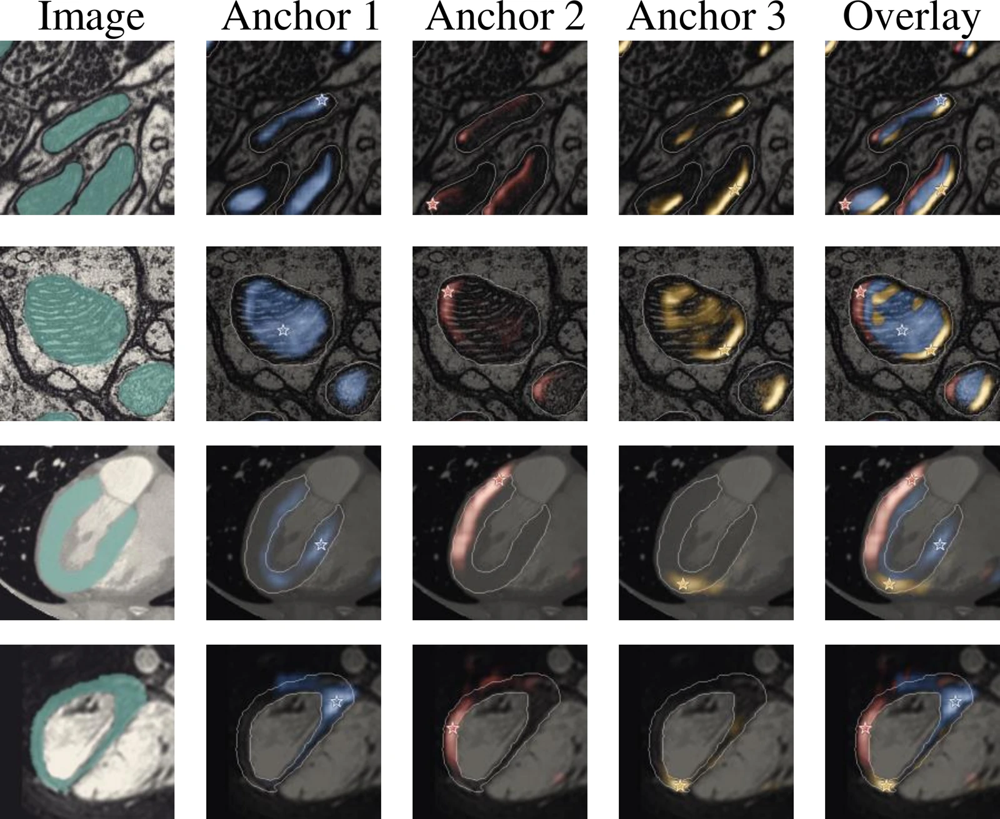

1School of Information Science and Technology, University of Science and Technology of China, Hefei 2Shenzhen International Graduate School, Tsinghua University, Shenzhen †Now with KlingAI, Shenzhen
Schematic: one pixel against 32 anchors, carried from source to target by an increasing change of similarity.
Abstract
Unsupervised domain adaptation usually supervises unlabeled target images with magnitudes such as prediction confidence. Under a biomedical shift these magnitudes move by class-dependent amounts, so a fixed threshold admits confident mistakes that self-training then reinforces.
RIDA keeps the teacher–student scheme and builds every target signal on rankings instead. Rank consistency keeps the comparisons that the weak view separates clearly; rank matching labels target pixels against class signatures from labeled source pixels; rank-stable self-training weights pseudo-labels by the share of comparisons that survive strong augmentation. On eight electron microscopy and cross-modality tasks with three backbones, RIDA outperforms 12 recent methods in all 24 settings, at no extra cost at inference.
Motivation
CT measures X-ray attenuation and MR measures proton relaxation; in electron microscopy, contrast depends on the microscope, the stain and the specimen. The same tissue can be bright in one domain and dark in another, and feature similarities shift by different amounts for different structures.
The order of those similarities shifts much less. In CT as in MR, a pixel of the left ventricle cavity is closest to the cavity, then the left atrium, then the background. Confidence is a magnitude, so under shift a fixed threshold lets confident mistakes into self-training.
Fig. 1The same structures in two domains. Across modalities and species, contrast can invert.
Threshold \(\eta = 0.7\)
Ranking
Fig. 2Schematic. Each class gets its own increasing change of similarity: the threshold keeps or drops the pixel, and the order of the anchors stays the same.
Method
RIDA keeps the teacher–student scheme of self-training: an EMA teacher reads a weak view of each target image and the student a strong view. The confidence-gated loss is replaced by three losses built on rankings.
A few pixels, the anchors \(A=[a_1;\dots;a_K]\), stand for the main structures of an image. A location \(u\) with unit feature \(f_u\) is described by its similarities and their ranking:
The ranking survives any increasing change of the similarities, however different from class to class. Anchors are chosen by farthest-point selection, so they cover different structures and rarely tie:
Target anchors are selected on the weak view of each target image, without labels. Source anchors are selected on labeled pixels, an equal share per class, and follow the teacher by online spherical \(k\)-means. None of this is needed at inference.
Rank consistency
A ranking is fixed by the signs of its pairwise gaps \(g_{kl}=r_k-r_l\). Pairs that the weak view separates by more than \(\delta\), the \(q\)-quantile of its gaps in the batch, are trusted; the strong view learns their signs.
Each class \(c\) has a signature \(\mu_c\), the mean ranking of its labeled source pixels. A target pixel takes the class whose signature best correlates with its ranking, weighted by half the margin \(m\).
The teacher still labels each pixel. Its pseudo-label is weighted by rank stability \(s\), the share of trusted pairs that keep their sign from the weak to the strong view, gated at \(s_0\).
\(\mathcal{L}_{sup}\) is cross-entropy plus soft Dice on labeled source images. All experiments use \(K=32\), \(s_0=0.8\) and \(\zeta=0.1\); the remaining settings are in the released configurations.
Training procedure
Warm up the student with \(\mathcal{L}_{sup}\); initialize the teacher from it.
Select the source anchors \(A^S\); initialize the signatures \(\{\mu_c\}\).
Sample a labeled source batch and an unlabeled target batch.
Compute \(\mathcal{L}_{sup}\); update \(A^S\) by online \(k\)-means and \(\{\mu_c\}\) by a moving average.
Encode the weak view with the teacher and the strong view with the student.
Select target anchors on the weak view; compute \(\delta\), the trusted pairs \(\mathcal{T}\) and \(\mathcal{L}_{rc}\).
Correlate weak-view rankings with \(\{\mu_c\}\); take labels and margins; compute \(\mathcal{L}_{rm}\).
Compute \(s\) and \(w\) from the trusted pairs; compute \(\mathcal{L}_{rs}\).
Update the student with \(\mathcal{L}\) and the teacher by EMA; repeat from step 3.
Theory
Theorem 1Target error of rank matching.
Let \(W_c\) be the smallest average weighted reordering over all pairings of source and target rankings of class \(c\), \(\varepsilon_S^{\kappa}\) the share of source pixels that rank matching misclassifies or labels with margin at most \(\kappa\), and \(\omega^S,\omega^T\) the class proportions. For every \(\kappa>0\),
The discrepancy term counts reorderings only. Under an order-preserving shift \(W_c=0\), however far the similarity values move.
Results
Twelve recent methods are reproduced on the same three backbones as RIDA: a U-Net trained from scratch, DINOv3 ViT-L/16, and MedSAM ViT-B with LoRA. Every method is evaluated at its best-Dice (cross-modality) or best-F1 (EM) checkpoint with seed 42, following DA-ISC and R4MITO.
Abdomen
CHAOS MR ⇄ BTCV CT liver, kidneys, spleen
MM-WHS
MR ⇄ CT AA, LAC, LVC, MYO
VNC III → Lucchi
ssTEM → FIB-SEM mitochondria, two subsets
MitoEM
rat ⇄ human cortex mitochondria
Strongest competitorRIDARIDA, mean ± 1 sd over 3 seeds
Fig. 5RIDA and the strongest competitor in each setting: Dice for cross-modality tasks, F1 for EM. Margins range from 0.27 to 10.31 points.
Table 1Per-class results. Bold: best; underline: second best; oracle excluded.
DAFormerMICRIDAOracle
Fig. 7GTA5 → Cityscapes with MiT-B5 and the DAFormer decoder, per-class IoU. mIoU: RIDA 69.87, MIC 69.54, DAFormer 68.31; source-only 42.11, oracle 77.21.
Analysis
Fig. 8Released checkpoints on target images, errors marked on the RIDA column.

Fig. 9Three source anchors of one class and their overlay. Farthest-point selection splits a class into complementary parts.
Fig. 10Target anchors, selected without labels.
Table 2Training cost on MM-WHS MR→CT, seconds per iteration and peak GPU memory. At inference RIDA costs exactly as much as its backbone.
Code
One configuration per setting, configs/rida/<backbone>/<benchmark>_<direction>.yaml, trained end to end by one command. Checkpoints are on Hugging Face.
# install
conda create -n rida python=3.11 -y && conda activate rida
pip install torch==2.5.1 torchvision==0.20.1 --index-url https://download.pytorch.org/whl/cu124
pip install -r requirements.txt
# checkpoints → checkpoints/rida/<benchmark>/<backbone>_<direction>.pth
huggingface-cli download jiajianihao/RIDA --local-dir checkpoints --include "rida/*"
bash scripts/data/check.sh # verify the data layout# train one setting, or all 24
python tools/train.py configs/rida/unet/cardiac_ct2mr.yaml
bash scripts/reproduce/all.sh
# evaluate
python tools/test.py configs/rida/unet/cardiac_ct2mr.yaml checkpoints/rida/cardiac/unet_ct2mr.pth
bash scripts/test/all.sh # every released checkpoint